Que font toute la journée les fameux 6 admins ? Est-ce que c'est une arnaque ? Est-ce qu'ils jouent à League of Legends en secret toute la journée ? On ne sait pas. Alors on va voir comment faire une infrastructure d'entreprise de A à Z. Donc imaginons que j'ai une entreprise qui vend des bananes. Donc voilà, je vais au marché, je vends des bananes. C'est pour ça le thème aujourd'hui. Et ça marche bien, je vends mes bananes. Mais je me dis, on est dans le troisième millénaire.
Interface & Outils : Jeu vidéo (League of Legends) sur écran PC et unité centrale gaming avec éclairage RGB.
Contenu textuel & Code : Affichage d'une session de jeu en cours (interface utilisateur de MOBA avec statistiques de personnages et carte).
Action / Démonstration : Illustration visuelle humoristique de la question sur l'activité réelle des administrateurs système (jouer à des jeux vidéo en cachette).
On va aller un petit peu plus vers la technologie. On va vendre nos bananes en ligne. Et donc pour ça, je récupère un petit développeur qui me fait ça nickel. un petit site web pour que les gens puissent voir et acheter les bananes en direct. Et voilà c'est fini. Fin du game voilà. En fait pourquoi on a besoin de 6 admins ? C'est fini ! Et c'est pas tout à fait fini parce que là ça marche sur l'ordi du dev mais s'il ferme son laptop bah c'est fini. Personne peut accéder au site. Donc évidemment on va me falloir un serveur. Un serveur c'est comme une tour d'ordi normale mais un petit peu plus fin pour pouvoir les empiler dans les data centers mais sinon à part ça c'est un ordi normal avec un
Interface & Outils : Navigateur web / barre de recherche système.
Contenu textuel & Code : Texte de recherche 'lesmeilleuresbananes' et suggestions associées.
Action / Démonstration : Illustration visuelle d'une recherche sur un site de vente de bananes en ligne.
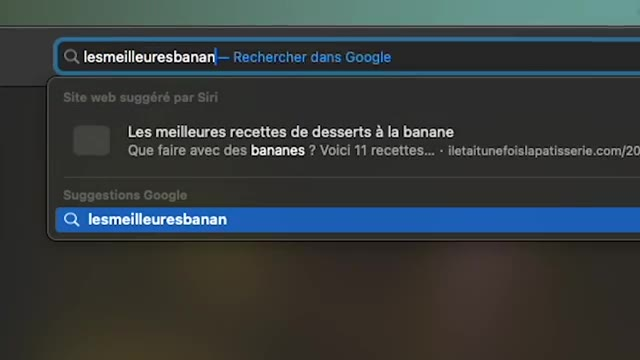
🔍 Zoomprocesseur, de la ram, un disque dur et qui est fait exprès pour être allumé tout le temps. Comme ça je vais pouvoir mettre mon site web dessus et tout le monde pourrait accéder tout le temps. Et pour une petite anecdote, Elon Musk quand il a fait sa première entreprise Zip2, c'était un espèce de Google Maps au tout début d'Internet et comme il n'avait pas d'argent, il codait la nuit parce qu'il n'y avait personne qui venait sur son site et la journée pendant qu'il dormait, son ordi ça devenait le serveur. Donc en moi c'est possible d'avoir un serveur sur son ordi, mais bon on comprend bien que c'est pas le plus adapté. Donc là hop mon site web on le prend de mon laptop, on le met sur le serveur et voilà c'est fini, fin du game encore. Et bah dans la La plupart des cas, oui, c'est fin du game, c'est bon, t'as mis ça sur ton serveur, ça marche, tranquille.
Interface & Outils : Aucun outil, terminal ou console technique n'est affiché à l'écran.
Contenu textuel & Code : Aucun code, commande ou architecture visible (plans purement narratifs).
Action / Démonstration : Explication narrative et historique sur l'hébergement web et les débuts d'Internet.
Y'a plus vraiment grand chose à faire. Le problème commence à arriver quand on commence à avoir ce qu'on appelle de la charge. C'est quand plein d'utilisateurs commencent à aller sur mon site en même temps. Donc là, mes bananes, elles sont tellement bonnes, elles sont bio, elles sont faites avec amour, elles sont délicieuses. Donc les gens avec le bouche à oreille vont de plus en plus sur mon site. Et même si au départ, ça marche nickel, au bout d'un moment, je vois que mon site, il ralentit quand il y a beaucoup de trafic dessus.
Interface & Outils : Aucune interface technique, terminal ou outil DevOps visible.
Contenu textuel & Code : Aucun code, commande, architecture ou métrique affiché.
Action / Démonstration : Explication métaphorique de la charge système en utilisant l'analogie de bananes bio et délicieuses.
Donc ce qu'il nous faut, c'est plus de patates, plus de puissance. Et il y a deux façons de faire ça. La première façon, c'est juste d'avoir un serveur plus balèze. Un serveur avec plus de cores, plus de gigahertz, plus de RAM. Et dans la plupart des cas, je vais pouvoir servir plus d'utilisateurs en même temps parce que mon serveur, il est plus costaud. Il y a deux problèmes avec cette solution. C'est que premièrement, ça ne va pas à l'infini.
Interface & Outils : Animation 3D explicative.
Contenu textuel & Code : Représentation visuelle d'un flux de traitement ou d'une infrastructure serveur.
Action / Démonstration : Illustration visuelle du concept de traitement des requêtes par un serveur plus puissant.
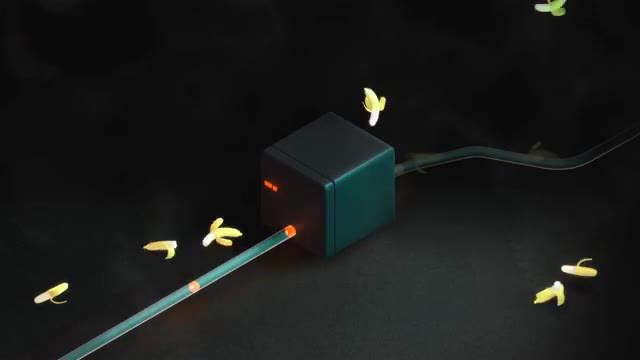
🔍 ZoomC'est-à-dire qu'une fois que j'ai le plus gros CPU possible et que j'ai rempli tous les slots de RAM, je ne peux pas en mettre plus. Donc ça veut dire que si vraiment j'ai beaucoup, beaucoup de gens qui vont sur mon site, au bout d'un moment, je ne pourrai juste plus accepter de nouvelles personnes. Mon site va redevenir lent. Deuxième plus gros problème, c'est que quand on rajoute un meilleur CPU, plus de RAM, etc., généralement, le prix n'est pas linéaire.
Interface & Outils : AUCUNE
Contenu textuel & Code : AUCUN
Action / Démonstration : Explication théorique des limites de la mise à l'échelle verticale (scale-up) matérielle.
Par exemple, si je prends un processeur 8 coeurs qui va coûter 200 euros, et bien un processeur 16 coeurs, il ne va pas coûter 400 euros. Il va coûter peut-être 500, 800 euros. Donc beaucoup plus que deux fois plus. Donc plus je vais avoir du matos performant dans mon ordi, et plus ça va me coûter de plus en plus cher. Donc une première chose qu'on pourrait faire, c'est que quand on regarde ce qui se passe sur la machine, on se rend compte qu'en fait qu'on a notre application, ce qui a codé notre développeur, et on a aussi une base de données pour pouvoir avoir la liste des stocks, avoir les listes de commandes, la liste des utilisateurs, etc.
Interface & Outils : Graphique de visualisation de données (bar chart) intégré en surimpression vidéo.
Contenu textuel & Code : Modèles de CPU AMD EPYC (EPYC 9015, 9135, 9355P, 9455, 9555, 9755) et métriques de coût par cœur (Price Per Core USD) avec légende indiquant le nombre de cœurs et la fréquence d'horloge de base.
Action / Démonstration : Explication et illustration visuelle de la relation non linéaire entre la performance des processeurs (nombre de cœurs) et leur coût par cœur.
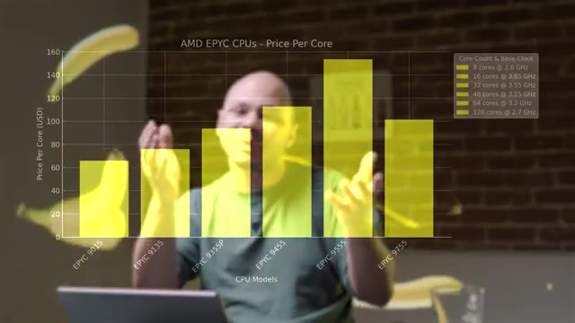
🔍 ZoomDonc ça, c'est un des premiers trucs qui arrivent et qui va ralentir mon site parce que mon application et ma base de données se battent pour les mêmes ressources de la machine. Donc pour éviter ça, tout simplement, on peut avoir deux serveurs. Un serveur qui va être juste pour l'application et un serveur qui va être juste pour la base de données. Comme ça, les deux, ils ont le max de ressources possibles et ça va nous permettre de pouvoir servir un plus grand nombre d'utilisateurs.
Interface & Outils : Aucune interface technique, console ou outil DevOps visible.
Contenu textuel & Code : Aucun code, commande ou métrique technique affiché.
Action / Démonstration : Explication théorique de l'optimisation des performances par la séparation des serveurs d'application et de base de données.
Maintenant qu'on a nos deux serveurs balèzes, imaginons qu'on a encore plus de demandes. Parce que forcément, il y a de plus en plus de gens qui écoutent à mes bananes, qui trouvent qu'elles sont délicieuses, qui en parlent à tous leurs amis. Et donc, j'ai encore plus de charges sur mon infrastructure. Et donc, on s'y t'est encore lent. Ce qu'on vient de faire, ça s'appelle du scaling vertical, c'est-à-dire prendre une machine de plus en plus balèze. Mais d'une autre façon, c'est le scaling horizontal.
Interface & Outils : AUCUNE
Contenu textuel & Code : AUCUNE
Action / Démonstration : Explication orale de l'augmentation de la charge sur l'infrastructure.
C'est-à-dire, au lieu d'acheter une machine plus puissante, on va acheter d'autres machines qu'on va mettre ensemble pour que chacune des machines puisse servir un petit nombre d'utilisateurs. Et donc, si on se rend compte que, par exemple, notre application, c'est notre goulot d'étranglement, c'est-à-dire que c'est ça qui ralentit, parce que la base de données, c'est quelque chose qui est codé en bas niveau, qui est vraiment super super optimisé, alors qu'on appelle l'application, il y a des chances que ce soit ça mon goulot d'étranglement.
Interface & Outils : Animation 3D explicative d'architecture système (flux réseau et stockage).
Contenu textuel & Code : Représentation visuelle d'un pipeline de données avec un nœud applicatif intermédiaire et une base de données cible.
Action / Démonstration : Explication du goulet d'étranglement applicatif dans une architecture distribuée.
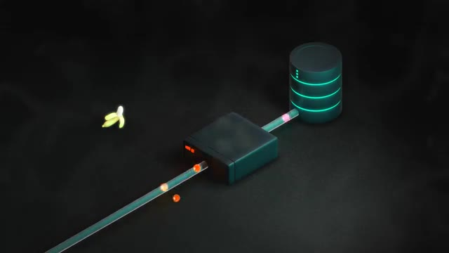
🔍 ZoomDonc l'idéal, ça serait de prendre cette application, et au lieu de l'avoir sur un gros serveur, de la distribuer sur plein de serveurs. Comme ça, je règle le problème une fois pour toutes. Si j'ai plus de personnes qui viennent sur mon site, je peux juste ajouter plus de serveurs à l'infini, du moins en tant que ma carte de crédit, elle passe. Ce qui n'est pas le cas avec le scaling vertical parce que même si je suis le plus riche du monde au bout d'un moment je ne peux pas acheter une machine plus grosse.
Interface & Outils : Aucune interface technique ou console affichée.
Contenu textuel & Code : Aucun code, commande ou architecture visible.
Action / Démonstration : Explication orale du concept de scalabilité horizontale et de l'élasticité cloud dépendante des coûts.
Mais ça ça crée un petit problème parce que maintenant que j'ai plein de machines pour mon application comment est-ce que je fais pour que mes utilisateurs soient répartis sur toutes mes machines ? Je ne peux pas leur dire toi tu vas sur Banan Server 1, toi tu vas sur Banan Server 2, toi tu vas sur Banan Server 3.com ça ça ne fait pas de sens. Je veux avoir un seul site, superbanan.com et que automatiquement ça redirige les requêtes vers les différents serveurs.
Interface & Outils : Animation 3D d'architecture système / réseau.
Contenu textuel & Code : Représentation visuelle de serveurs (nodes) et d'une base de données centralisée interconnectés.
Action / Démonstration : Illustration du problème de répartition de charge et de la distribution du trafic réseau entre plusieurs instances de serveurs.
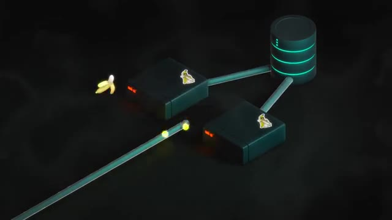
🔍 ZoomEt donc pour faire ça je vais avoir besoin d'un autre serveur qui s'appelle un load balancer ou en français un équilibre de charge. Et c'est ce serveur-là qui va rediriger les requêtes parmi tous les serveurs d'application que j'ai derrière. Et comme il ne fait rien de spécial avec les requêtes, il ne regarde même pas ce qu'il y a dedans, il n'a rien besoin de faire, il peut recevoir 10 fois, 100 fois le nombre de requêtes qui va être distribuée derrière. C'est-à-dire que potentiellement, je pourrais avoir 50 serveurs applicatifs et juste un autre balancer.
Interface & Outils : Aucune interface technique, terminal ou diagramme affiché
Contenu textuel & Code : Aucun contenu technique textuel ou de ligne de commande
Action / Démonstration : Explication orale du concept de load balancer et de sa fonction de répartition des requêtes réseau
Ça serait largement assez pour pouvoir recevoir les requêtes et toutes les rediriger. Parce que les serveurs applicatifs, eux, quand ils recevrent les requêtes, il faut qu'ils regardent ce qu'il y a dedans, il faut qu'il y ait des sites qu'il faut faire, est-ce que c'est quelqu'un qui est en train de se loguer, est-ce que c'est quelqu'un qui place une commande, il faut qu'il se connecte à la base de données, ils ont plein de choses à faire. Alors que le load balancer, lui, il n'a rien, il regarde la requête, il l'envoie à gauche, il l'envoie à droite. En termes d'utilisation de ressources, ça consomme 100 fois moins que ce que les serveurs applicatifs doivent faire.
Interface & Outils : AUCUNE
Contenu textuel & Code : AUCUN
Action / Démonstration : Explication orale sur le fonctionnement des serveurs applicatifs et le traitement des requêtes.
Et ce load balancer, il peut avoir plusieurs manières de distribuer les requêtes. Il peut faire soit dans l'ordre, c'est-à-dire que la première requête va aller sur le serveur 1, la deuxième sur le serveur 2, et puis tourner comme ça. Cet algorithme-là s'appelle Round Robin, ça veut dire qu'il tourne en rond 1, 2, 3, 4, 5, 6, et ensuite il recommence 1, 2, 3, 4, 5, 6. Il y a d'autres types d'algorithmes. Par exemple, le load balancer, il peut mesurer le temps de réponse de chacun des serveurs. Et s'il y a un serveur qui répond un petit peu plus lentement que les autres, il va lui envoyer moins de requêtes qu'aux autres pour pouvoir équilibrer justement la charge.
Interface & Outils : AUCUNE
Contenu textuel & Code : AUCUNE
Action / Démonstration : Explication théorique de l'algorithme de répartition de charge Round Robin.
Il peut également faire en sorte que quand une personne se connaît sur mon site, cette personne soit toujours envoyée vers le même serveur. Et ça, ça peut éviter les problèmes de cession parce que si quelqu'un crée un compte et se connecte sur un des serveurs, si sa requête suivante, elle arrive sur un autre serveur sur lequel il n'est pas encore connecté, et bah du coup, ça peut poser des problèmes. Donc si on l'envoie toujours sur le même, on n'aura pas ce type de problème-là, et le load balancer peut être assez intelligent pour distribuer les requêtes comme ça.
Interface & Outils : Aucun outil, terminal ou interface graphique visible.
Contenu textuel & Code : Aucun code, commande ou diagramme d'architecture présent à l'écran.
Action / Démonstration : Explication orale de concepts DevOps et de gestion de sessions réseau par le créateur.
Maintenant, imaginons que mes bananes sont tellement délicieuses que carrément, je suis passé à la télé, je suis devenu viral sur TikTok partout, et donc il y a encore plus de personnes qui viennent sur mon site. On peut se dire, bah mon load balancer, il va commencer à lui-même recevoir autre requête, donc comment est-ce que je peux faire ? Et en plus, mon load balancer, c'est devenu ce qu'on appelle un single point of failure, un élément central qui, si ça tombe, il n'y a plus rien qui marche, même si j'ai 50 serveurs derrière.
Interface & Outils : Animation 3D illustrant l'architecture réseau et la répartition de charge.
Contenu textuel & Code : Flux de requêtes (points lumineux) arrivant sur un répartiteur de charge en surchauffe, puis acheminés via des câbles vers un pool de serveurs.
Action / Démonstration : Explication visuelle de la surcharge d'un load balancer suite à un trafic viral et de la nécessité de répartir les requêtes.
Donc on veut au moins le redonder, en avoir au moins deux ou trois, et aussi être capable de scaler, c'est-à-dire si on a vraiment beaucoup plus de requêtes, on pourrait en rajouter 4, 5, 6. Et donc pour faire ça, on peut utiliser le DNS. Quand quelqu'un fait une requête DNS pour aller sur bananeserver.com, je peux configurer mon nom de domaine pour répondre plusieurs adresses IP. Et comme ça, c'est le navigateur de l'utilisateur, quand il va recevoir cette liste d'adresses IP, il va choisir une des adresses au hasard, et va se connaître dessus.
Interface & Outils : Animation 3D illustrant l'infrastructure réseau et les requêtes DNS.
Contenu textuel & Code : Superbananes.com résolu vers les adresses IP 69.69.69.69 et 42.42.42.42 avec des serveurs redondants connectés à une base de données.
Action / Démonstration : Explication de la redondance et de la scalabilité d'une application web à l'aide de plusieurs serveurs configurés derrière un nom de domaine.
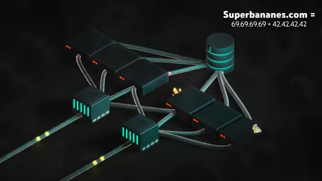
🔍 ZoomEt ça va dire que ça va distribuer les gens sur mes différents load balancers qui eux-mêmes vont aller distribuer les requêtes sur les différents serveurs applicatifs derrière. Et donc de cette manière-là, je peux scaler plus ou moins à l'infini. D'ailleurs, par exemple, si on fait une requête DNS pour youtube.com, on se rend compte qu'il y a plein d'adresses IP qui sont retournées et qu'en plus de ça, si on refait les requêtes de temps en temps, ces adresses IP, elles changent. Donc ça permet de pouvoir distribuer les requêtes sur autant de serveurs qu'on a besoin.
Interface & Outils : Terminal Linux (bash/zsh)
Contenu textuel & Code : Commande saisie : `nslookup www.youtube.com`
Action / Démonstration : Exécution d'une requête de résolution DNS pour illustrer la répartition de charge (load balancing) globale d'un grand service web.
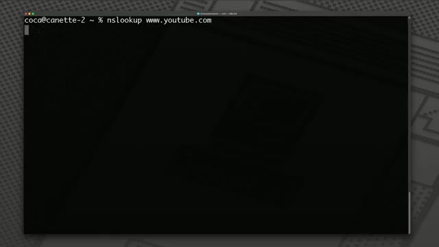
🔍 ZoomDonc maintenant, c'est bon. On peut respirer. On a notre infra. C'est scalable. on peut rajouter des savoirs à l'infini. Sauf qu'on a oublié quelque chose, c'est qu'au final, derrière, ma base de données, c'est elle qui maintenant est devenue un single point of failure. Et même si c'est super optimisé, etc., au bout d'un moment, quand t'as 100 serveurs qui la bombarde H24, elle va commencer à souffrir un petit peu. Donc on pourrait se dire, les bases de données, on va faire pareil que pour l'application, on va juste rajouter plus de serveurs. Sauf que malheureusement, c'est pas si simple que ça parce que les bases de données, elles sont stateful. Ça veut dire qu'elles ont un état, elles ont des données. Bah oui, par définition. Et contrairement aux applications qui elles sont stateless, c'est-à-dire qu'elles n'ont pas d'état, c'est-à-dire que je peux redémarrer un serveur applicatif,
Interface & Outils : AUCUNE
Contenu textuel & Code : AUCUNE
Action / Démonstration : Explication orale et théorique sur les limites d'une architecture centralisée et la gestion d'une base de données à grande échelle.
ça ne va rien changer, et qu'une requête arrive sur le serveur 5 ou arrive sur le serveur 3, ça ne va rien changer, le 5 et le 3, ils n'ont pas besoin de communiquer entre eux, c'est pour ça qu'on peut l'escaler à l'infini, que j'en ai 5 ou j'en ai 50, ça ne me changerait. Alors que pour une base de données, il faut que les informations soient synchronisées. Si je veux ma liste des commandes, je ne veux pas avoir la moitié de mes commandes, je veux avoir la totalité. Donc ça veut dire que si je crée une commande et que ça arrive sur un serveur de base de données, Et bien ce serveur-là, il faut que ça se synchronise avec tous les autres serveurs de base de données pour pouvoir ajouter cette commande.
Interface & Outils : AUCUNE
Contenu textuel & Code : AUCUN
Action / Démonstration : Explication théorique sur l'indépendance des serveurs stateless et la mise à l'échelle horizontale.
Ce qui fait que si j'ai trois serveurs, et bien au final ma requête a généré trois requêtes et donc au final ça ne sert à rien d'avoir plus de serveurs. Les trois serveurs vont avoir la même charge. Si on faisait juste ça, le fait d'avoir cinq serveurs de base de données, ça me permet très d'accueillir exactement le même nombre que d'avoir un seul serveur de base de données. Donc ça n'a pas un très gros intérêt. Le seul avantage c'est que maintenant j'ai de la haute disponibilité et si j'en ai un qui tombe, j'en ai d'autres.
Interface & Outils : Aucune interface technique affichée.
Contenu textuel & Code : Aucun contenu technique, de code ou d'architecture visible.
Action / Démonstration : Explication verbale de concepts liés à la mise à l'échelle des serveurs de base de données.
mais ça ne me permet pas de régler mon problème de charge du fait que j'ai plein de gens qui veulent acheter mes bananes. Donc pour régler ce problème, une technique qui existe, ça s'appelle faire du sharding. Un shard, c'est un morceau en anglais. Et ça consiste à découper nos données. Par exemple, imaginons que j'ai 1000 utilisateurs, je pourrais prendre 500 utilisateurs et les mettre sur une base de données, et les 500 autres utilisateurs les mettre sur une autre base de données.
Interface & Outils : AUCUNE
Contenu textuel & Code : AUCUNE
Action / Démonstration : Explication théorique du concept de sharding pour la gestion de la charge des bases de données.
De cette manière, les deux sont indépendants, ils n'ont pas besoin de communiquer, et donc je peux gérer deux fois plus de personnes. Donc si je rajoute 10 serveurs de base de données, qui ont chacun un cinquième du nombre d'utilisateurs, et bien je vais pouvoir accueillir 10 fois plus de personnes. Et donc je peux maintenant scaler autant que je veux, autant que j'ai de nouveaux utilisateurs. Donc cette technique, elle est très facile à mettre en place et c'est même parfois fait automatiquement par la plupart des serveurs de bases de données de type NoSQL.
Interface & Outils : AUCUNE
Contenu textuel & Code : AUCUNE
Action / Démonstration : Explication théorique sur le scaling horizontal des serveurs de base de données.
Donc il y en a plein, par exemple MongoDB, Redis, Elasticsearch, CoachBase et il y en a plein d'autres. Mais c'est beaucoup plus compliqué à faire quand on a des serveurs de type SQL, comme par exemple avec Postgre, SQL Server, MySQL, Oracle, etc. Parce que par définition, les bases de données SQL pour Structured Query Language, elles sont structurées. C'est-à-dire que les différentes données ont des relations entre elles.
Interface & Outils : Graphique de présentation vidéo avec logo de base de données.
Contenu textuel & Code : Texte "Serveurs SQL" et logo PostgreSQL.
Action / Démonstration : Explication et introduction des concepts liés aux serveurs de bases de données SQL.
Par exemple, une commande est reliée à un utilisateur. Un produit est relié à une commande. Et donc le fait qu'on ait ces liens entre les différentes données font que si je mets une partie des utilisateurs dans ce serveur et une partie des commandes dans cet autre serveur, et bien là, je vais commencer à avoir plein de communications entre les différents serveurs qui vont faire que je ne vais pas pouvoir scaler très facilement. Parce qu'on revient à un problème que j'expliquais avant où une requête d'un utilisateur peut commencer à générer 10 requêtes sur 5 serveurs différents. Du coup, c'est beaucoup moins performant et c'est beaucoup plus difficile de scaler.
Interface & Outils : Animation 3D illustrant une architecture distribuée et des flux réseau.
Contenu textuel & Code : Nœuds de serveurs et bases de données reliés par des tuyaux représentant les communications réseau et les requêtes.
Action / Démonstration : Explication de la complexité et de la surcharge des communications réseau entre serveurs distribués lors du découplage de données.
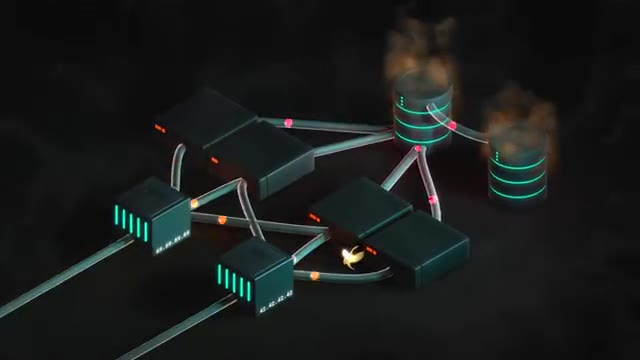
🔍 ZoomÀ la place, on peut utiliser une autre technique. Parce que si on regarde bien, dans la plupart des applications, 90 voire même peut-être 95% des requêtes, c'est des requêtes en lecture. Et le reste, peut-être seulement 5% ou 3%, c'est des requêtes en écriture. Parce que si je prends mon site par exemple, la plupart des gens vont regarder le catalogue, regarder leur liste de commandes, regarder la liste des utilisateurs, des choses comme ça. Et donc tout ça, c'est des requêtes qui sont en lecture. Je fais juste récupérer des données de ma base de données. Et des requêtes qui sont en écriture, c'est-à-dire créer une nouvelle commande, ajouter un nouveau produit, créer un nouvel utilisateur, et bien ça c'est 5% voire même juste 1% du temps. C'est à dire que je
Interface & Outils : Graphique textuel intégré en post-production.
Contenu textuel & Code : Texte affichant « MOYENNE DES REQUÊTES » et « ~95% LECTURE ».
Action / Démonstration : Illustration visuelle du ratio de requêtes en lecture par rapport aux requêtes en écriture dans une application web.
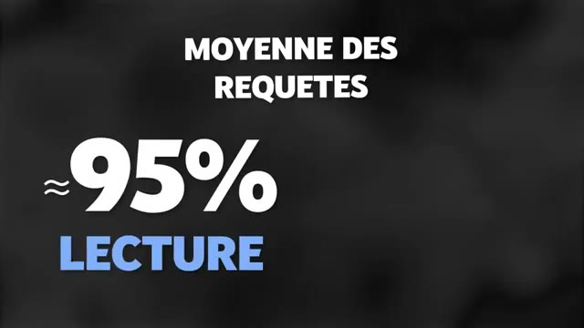
🔍 Zoompeux potentiellement avoir 10 fois, 50 fois, 100 fois plus de requêtes en lecture que de requêtes en écriture. Donc ce que je pourrais faire c'est d'avoir un serveur de base de données principal qu'on appelle parfois master et ce serveur là ça va être le seul qui va recevoir les requêtes en écriture. Donc il va recevoir peut-être 5% du trafic. Et en suite je peux rajouter plein d'autres serveurs secondaires qui vont être des serveurs en lecture seul. Et donc mon application à chaque fois qu'elle a besoin de faire une lecture elle va aller sur au hasard un de mes serveurs en lecture.
Interface & Outils : Animation 3D d'architecture réseau et de bases de données
Contenu textuel & Code : Représentation visuelle d'un serveur de base de données principal (master avec une icône de couronne) et de serveurs de réplication, interconnectés par des flux de données.
Action / Démonstration : Explication de l'architecture de réplication de base de données avec un nœud maître gérant les écritures et des nœuds secondaires pour la lecture.
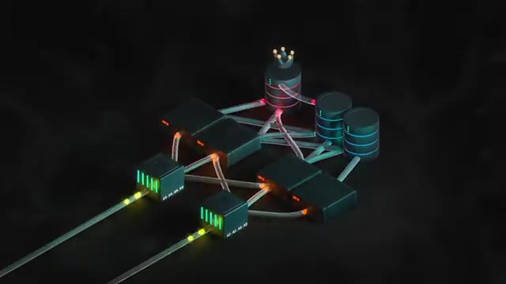
🔍 ZoomLes serveurs en lecture, ils ont pas besoin de communiquer entre eux parce que tu fais juste récupérer des données. Donc tu récupères du serveur 1 ou du serveur 12, ça change rien. Par contre, quand l'application a besoin de faire une écriture, donc quand quelqu'un crée une commande, quand on ajoute un nouvel utilisateur, quand on ajoute un nouveau produit, et donc là, ces requêtes-là qui sont très rares, elles vont aller directement sur le master. Et c'est ce qui fait que je vais pouvoir gérer de plus en plus d'utilisateurs parce que le serveur principal, il synchronise ses données avec tous les serveurs secondaires et je peux ajouter presque autant de serveurs secondaires que j'ai besoin en fonction du nombre d'utilisateurs qui viennent sur mon site.
Interface & Outils : Aucune interface ou console affichée.
Contenu textuel & Code : Aucun contenu technique, code ou architecture affiché à l'écran.
Action / Démonstration : Explication orale de concepts d'architecture système (opérations en lecture vs écriture sur des serveurs).
Et donc ça y est, on a enfin fini le game. on a notre balancer qu'on peut scaler presque à l'infini. On a ensuite nos serveurs applicatifs qu'on peut scaler aussi presque à l'infini. Et ensuite, on a nos bases de données qu'on peut scaler presque à l'infini tant qu'on n'a pas trop d'écriture. Mais pour ça, il nous reste encore le scaling vertical, il nous reste aussi le sharding et d'autres techniques. Donc, je peux avoir autant de consommateurs de bananes que je veux sur mon site web tant que j'ai l'argent pour pouvoir payer ma facture.
Interface & Outils : Aucune
Contenu textuel & Code : Aucun
Action / Démonstration : Explication orale et conceptuelle concernant le scaling horizontal (load balancers, serveurs applicatifs, bases de données en lecture) et l'introduction du concept de scaling vertical.
Si tu veux apprendre avec moi ces notions de système design, de DevOps, etc., tous les quelques mois, je fais une formation privée avec un petit groupe de personnes qui sont vraiment motivées. Donc si ça t'intéresse, je te laisse le lien pour t'inscrire pour être au courant la prochaine fois que je fais ça. Et en attendant, dites-moi les sujets sur lesquels vous voudrez aller un petit peu plus en profondeur. Est-ce que vous voulez qu'on parle de microservices ? Est-ce que vous voulez qu'on parle plus de bases de données ? Est-ce que vous voulez qu'on parle plus de réseaux, de cloud ?
Interface & Outils : Page web de capture de leads / formulaire d'inscription pour la formation DevOps.
Contenu textuel & Code : Texte de présentation de la formation DevOps intensive de 6 semaines avec champs de saisie (Prénom, Email) et bouton d'inscription, accompagné du diagramme du cycle DevOps.
Action / Démonstration : Présentation de la formation privée DevOps et incrustation visuelle de la page d'inscription pour inciter les spectateurs à rejoindre la liste d'attente.
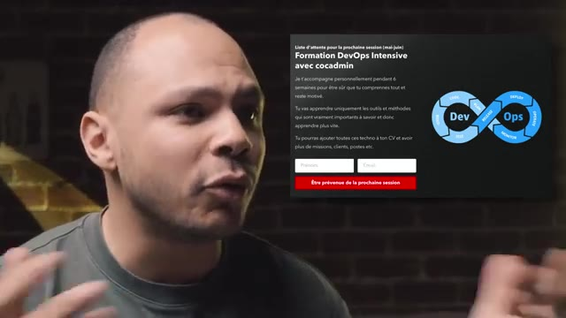
🔍 ZoomOu même plus de système design comme on vient d'en parler aujourd'hui. Et comme ça, on en parlera dans une prochaine vidéo.
Interface & Outils : AUCUNE
Contenu textuel & Code : AUCUN
Action / Démonstration : Explication orale de concepts DevOps / system design sans support visuel technique.